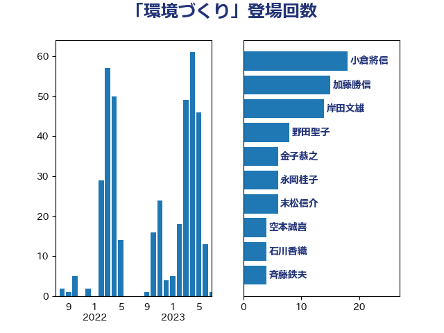

単語「環境づくり」

| 小倉將信 | 自由民主党 | 18 回 |
| 加藤勝信 | 自由民主党 | 15 回 |
| 岸田文雄 | 自由民主党 | 14 回 |
| 野田聖子 | 自由民主党 | 8 回 |
| 金子恭之 | 自由民主党 | 6 回 |
| 永岡桂子 | 自由民主党 | 6 回 |
| 末松信介 | 自由民主党 | 6 回 |
| 空本誠喜 | 日本維新の会 | 4 回 |
| 石川香織 | 立憲民主党 | 4 回 |
| 斉藤鉄夫 | 公明党 | 4 回 |
| 山口那津男 | 公明党 | 4 回 |
| 山口壯 | 自由民主党 | 4 回 |
| 門山宏哲 | 自由民主党 | 3 回 |
| 金子恵美 | 立憲民主党 | 3 回 |
| 金城泰邦 | 公明党 | 3 回 |
| 野中厚 | 自由民主党 | 3 回 |
| 西田実仁 | 公明党 | 3 回 |
| 萩生田光一 | 自由民主党 | 3 回 |
| 若松謙維 | 公明党 | 3 回 |
| 礒崎哲史 | 国民民主党 | 3 回 |
| 畦元将吾 | 自由民主党 | 3 回 |
| 浜口誠 | 国民民主党 | 3 回 |
| 森屋隆 | 立憲民主党 | 3 回 |
| 後藤茂之 | 自由民主党 | 3 回 |
| 小川淳也 | 立憲民主党 | 3 回 |
| 城井崇 | 立憲民主党 | 3 回 |
| 伊佐進一 | 公明党 | 3 回 |
| 仁木博文 | 無所属 | 3 回 |
| 五十嵐清 | 自由民主党 | 3 回 |
| 齋藤健 | 自由民主党 | 2 回 |
| 青山大人 | 立憲民主党 | 2 回 |
| 里見隆治 | 公明党 | 2 回 |
| 足立敏之 | 自由民主党 | 2 回 |
| 角田秀穂 | 公明党 | 2 回 |
| 西岡秀子 | 国民民主党 | 2 回 |
| 藤巻健太 | 日本維新の会 | 2 回 |
| 葉梨康弘 | 自由民主党 | 2 回 |
| 芳賀道也 | 国民民主党 | 2 回 |
| 穂坂泰 | 自由民主党 | 2 回 |
| 稲津久 | 公明党 | 2 回 |
| 神津たけし | 立憲民主党 | 2 回 |
| 牧島かれん | 自由民主党 | 2 回 |
| 河野太郎 | 自由民主党 | 2 回 |
| 横沢高徳 | 立憲民主党 | 2 回 |
| 柳ヶ瀬裕文 | 日本維新の会 | 2 回 |
| 松野明美 | 日本維新の会 | 2 回 |
| 松野博一 | 自由民主党 | 2 回 |
| 本田顕子 | 自由民主党 | 2 回 |
| 星北斗 | 自由民主党 | 2 回 |
| 島村大 | 自由民主党 | 2 回 |
| 山本啓介 | 自由民主党 | 2 回 |
| 小野泰輔 | 日本維新の会 | 2 回 |
| 小林鷹之 | 自由民主党 | 2 回 |
| 大串正樹 | 自由民主党 | 2 回 |
| 堀内詔子 | 自由民主党 | 2 回 |
| 吉田とも代 | 日本維新の会 | 2 回 |
| 住吉寛紀 | 日本維新の会 | 2 回 |
| 今井絵理子 | 自由民主党 | 2 回 |
| 中川正春 | 立憲民主党 | 2 回 |
| 上野通子 | 自由民主党 | 2 回 |
| おおつき紅葉 | 立憲民主党 | 2 回 |
| 高橋千鶴子 | 日本共産党 | 1 回 |
| 高橋はるみ | 自由民主党 | 1 回 |
| 高市早苗 | 自由民主党 | 1 回 |
| 音喜多駿 | 日本維新の会 | 1 回 |
| 青柳仁士 | 日本維新の会 | 1 回 |
| 阿部司 | 日本維新の会 | 1 回 |
| 鈴木義弘 | 国民民主党 | 1 回 |
| 鈴木俊一 | 自由民主党 | 1 回 |
| 野間健 | 立憲民主党 | 1 回 |
| 野村哲郎 | 自由民主党 | 1 回 |
| 道下大樹 | 立憲民主党 | 1 回 |
| 豊田俊郎 | 自由民主党 | 1 回 |
| 西銘恒三郎 | 自由民主党 | 1 回 |
| 西村康稔 | 自由民主党 | 1 回 |
| 衛藤晟一 | 自由民主党 | 1 回 |
| 藤井比早之 | 自由民主党 | 1 回 |
| 若宮健嗣 | 自由民主党 | 1 回 |
| 自見はなこ | 自由民主党 | 1 回 |
| 福田達夫 | 自由民主党 | 1 回 |
| 福山哲郎 | 立憲民主党 | 1 回 |
| 神谷裕 | 立憲民主党 | 1 回 |
| 石橋林太郎 | 自由民主党 | 1 回 |
| 石川大我 | 立憲民主党 | 1 回 |
| 石川博崇 | 公明党 | 1 回 |
| 石井苗子 | 日本維新の会 | 1 回 |
| 石井浩郎 | 自由民主党 | 1 回 |
| 田畑裕明 | 自由民主党 | 1 回 |
| 田中健 | 国民民主党 | 1 回 |
| 生稲晃子 | 自由民主党 | 1 回 |
| 瀬戸隆一 | 自由民主党 | 1 回 |
| 渡辺猛之 | 自由民主党 | 1 回 |
| 渡辺孝一 | 自由民主党 | 1 回 |
| 渡辺創 | 立憲民主党 | 1 回 |
| 浜田靖一 | 自由民主党 | 1 回 |
| 浅野哲 | 国民民主党 | 1 回 |
| 沢田良 | 日本維新の会 | 1 回 |
| 池田佳隆 | 自由民主党 | 1 回 |
| 比嘉奈津美 | 自由民主党 | 1 回 |
| 森田俊和 | 立憲民主党 | 1 回 |
| 梅谷守 | 立憲民主党 | 1 回 |
| 梅村聡 | 日本維新の会 | 1 回 |
| 柴田巧 | 日本維新の会 | 1 回 |
| 松本剛明 | 自由民主党 | 1 回 |
| 松山政司 | 自由民主党 | 1 回 |
| 村田享子 | 立憲民主党 | 1 回 |
| 杉尾秀哉 | 立憲民主党 | 1 回 |
| 杉久武 | 公明党 | 1 回 |
| 早稲田ゆき | 立憲民主党 | 1 回 |
| 日下正喜 | 公明党 | 1 回 |
| 新妻秀規 | 公明党 | 1 回 |
| 平山佐知子 | 無所属 | 1 回 |
| 川田龍平 | 立憲民主党 | 1 回 |
| 岬麻紀 | 日本維新の会 | 1 回 |
| 岩渕友 | 日本共産党 | 1 回 |
| 山田勝彦 | 立憲民主党 | 1 回 |
| 山本順三 | 自由民主党 | 1 回 |
| 山本博司 | 公明党 | 1 回 |
| 山崎正恭 | 公明党 | 1 回 |
| 山岡達丸 | 立憲民主党 | 1 回 |
| 山下芳生 | 日本共産党 | 1 回 |
| 小宮山泰子 | 立憲民主党 | 1 回 |
| 宮本岳志 | 日本共産党 | 1 回 |
| 宮崎雅夫 | 自由民主党 | 1 回 |
| 宮口治子 | 立憲民主党 | 1 回 |
| 室井邦彦 | 日本維新の会 | 1 回 |
| 安江伸夫 | 公明党 | 1 回 |
| 奥下剛光 | 日本維新の会 | 1 回 |
| 太栄志 | 立憲民主党 | 1 回 |
| 大島九州男 | れいわ新選組 | 1 回 |
| 坂本祐之輔 | 立憲民主党 | 1 回 |
| 國場幸之助 | 自由民主党 | 1 回 |
| 和田義明 | 自由民主党 | 1 回 |
| 和田有一朗 | 日本維新の会 | 1 回 |
| 古賀千景 | 立憲民主党 | 1 回 |
| 古賀之士 | 立憲民主党 | 1 回 |
| 古川禎久 | 自由民主党 | 1 回 |
| 古川元久 | 国民民主党 | 1 回 |
| 古屋範子 | 公明党 | 1 回 |
| 佐藤英道 | 公明党 | 1 回 |
| 伊藤孝江 | 公明党 | 1 回 |
| 伊藤孝恵 | 国民民主党 | 1 回 |
| 仁比聡平 | 日本共産党 | 1 回 |
| 井野俊郎 | 自由民主党 | 1 回 |
| 亀岡偉民 | 自由民主党 | 1 回 |
| 中西祐介 | 自由民主党 | 1 回 |
| 中条きよし | 日本維新の会 | 1 回 |
| 中島克仁 | 立憲民主党 | 1 回 |
| 中司宏 | 日本維新の会 | 1 回 |
| 上田清司 | 国民民主党 | 1 回 |
| 上田勇 | 公明党 | 1 回 |
| ながえ孝子 | 無所属 | 1 回 |